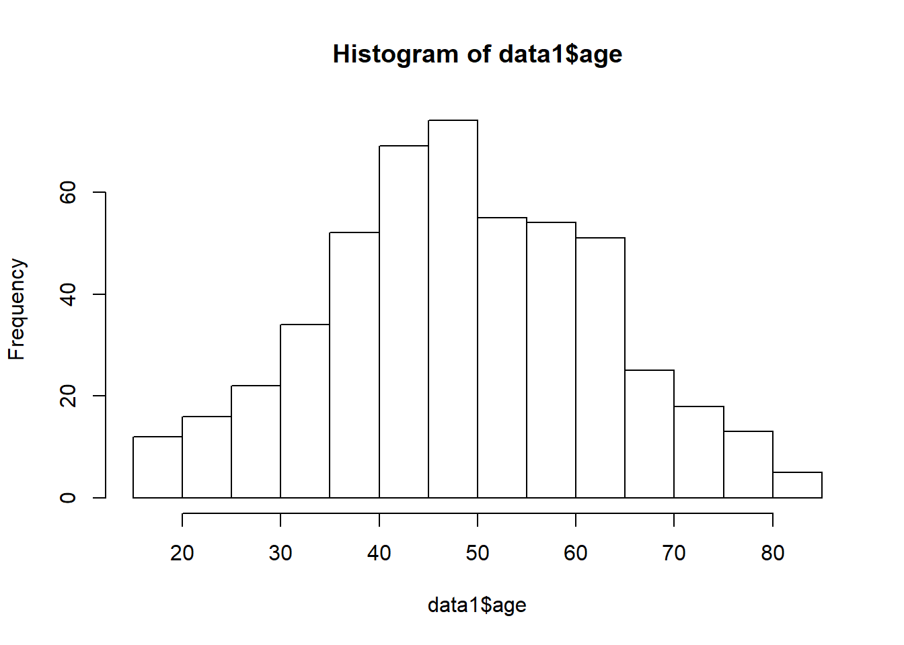
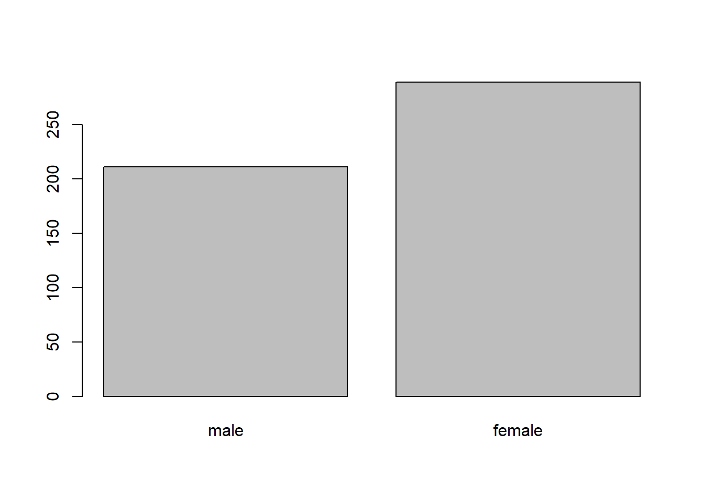

Chapter 10 GLM
10.0.1 Objectives
At the end of the lecture, participants are
- able to perform linear regression
- able to perform logistic regression
- able to perform Cox proportional hazard regression
10.1 Set working directory
Set your working directory.
This is a folder that contains your dataset and objects created by R.
10.2 Read data
We will read a stata data into R. This file will read using foreign package.
We will name the object as data1 as an object that represent the dataset.
This object is a data.frame object
The data1 object will remain in the memory unless you close your RStudio.
library(foreign)
data1 <- read.dta('metab1.dta', convert.factors = TRUE)
head(data1)## id2 age sex race marital dm bmi2 waist hip hba1c fbs totchol msbp
## 1 1 42 2 1 1 0 21.31 72 89 5.0 5.41 4.80 113.25
## 2 2 63 2 1 3 1 36.00 125 95 7.2 8.39 8.09 209.00
## 3 3 54 2 1 1 0 37.17 100 118 5.6 5.46 4.32 160.00
## 4 4 46 1 1 1 0 27.34 89 97 5.3 5.82 5.27 134.25
## 5 5 40 2 1 1 0 26.94 79 99 4.8 4.67 6.38 100.00
## 6 6 43 1 1 1 0 28.82 101 112 5.1 4.82 7.48 159.00
## mdbp gender crural racecat whr
## 1 73.50 female 0 0 0.8089887
## 2 94.00 female 1 0 1.3157895
## 3 76.75 female 0 0 0.8474576
## 4 87.75 male 1 0 0.9175258
## 5 65.00 female 1 0 0.7979798
## 6 104.00 male 0 0 0.9017857We use head() function to list the first 6 observations in the dataset.
10.3 Explore and clean data
Next we will describe the data and visualize
- Descriptive
- Visualization
10.3.1 Descriptive analysis
We will check basic descriptive statistics from our data
library(psych)
describe(data1)## vars n mean sd median trimmed mad min max range
## id2 1 500 250.50 144.48 250.50 250.50 185.32 1.00 500.00 499.00
## age 2 500 49.04 14.09 48.50 49.06 14.08 18.00 84.00 66.00
## sex 3 500 1.58 0.49 2.00 1.60 0.00 1.00 2.00 1.00
## race 4 500 1.46 0.99 1.00 1.21 0.00 1.00 5.00 4.00
## marital 5 498 1.29 0.65 1.00 1.12 0.00 1.00 3.00 2.00
## dm 6 500 0.11 0.31 0.00 0.01 0.00 0.00 1.00 1.00
## bmi2 7 500 26.28 5.33 25.71 25.95 4.81 14.30 56.08 41.78
## waist 8 500 86.40 12.79 86.00 86.08 11.86 52.00 154.50 102.50
## hip 9 500 98.54 10.75 98.00 98.31 10.38 62.00 153.50 91.50
## hba1c 10 496 5.86 1.47 5.40 5.56 0.44 0.20 13.20 13.00
## fbs 11 486 5.94 2.30 5.39 5.54 1.14 2.59 21.11 18.52
## totchol 12 496 5.83 1.29 5.80 5.76 1.20 2.47 12.29 9.82
## msbp 13 500 134.72 22.77 132.00 132.92 21.68 82.50 225.00 142.50
## mdbp 14 500 80.03 11.51 79.50 79.86 11.49 45.00 120.00 75.00
## gender* 15 500 1.42 0.49 1.00 1.40 0.00 1.00 2.00 1.00
## crural 16 500 0.51 0.50 1.00 0.51 0.00 0.00 1.00 1.00
## racecat 17 500 0.45 0.94 0.00 0.21 0.00 0.00 3.00 3.00
## whr 18 500 0.88 0.11 0.86 0.87 0.08 0.65 1.42 0.77
## skew kurtosis se
## id2 0.00 -1.21 6.46
## age 0.01 -0.46 0.63
## sex -0.31 -1.90 0.02
## race 2.00 2.77 0.04
## marital 1.98 2.28 0.03
## dm 2.52 4.35 0.01
## bmi2 0.97 2.50 0.24
## waist 0.61 2.03 0.57
## hip 0.46 2.21 0.48
## hba1c 2.49 7.80 0.07
## fbs 2.88 11.33 0.10
## totchol 0.73 1.74 0.06
## msbp 0.80 0.68 1.02
## mdbp 0.18 -0.05 0.51
## gender* 0.31 -1.90 0.02
## crural -0.03 -2.00 0.02
## racecat 1.85 1.87 0.04
## whr 1.72 5.09 0.0010.3.2 Visualization
We do not have time to cover for data vizualition.
But for here we would do
- histogram
- bar charts
- box-plots
- scatterplots
To examine the distribution of our data.
Briefly:
hist(data1$age)
cts_sex <- table(data1$sex)
barplot(cts_sex, names.arg = c('male','female'))
cor(data1[,c(2,7:14 )], use = 'complete.obs')## age bmi2 waist hip hba1c
## age 1.0000000000 0.01333764 0.20366927 0.0007456519 0.1637614
## bmi2 0.0133376398 1.00000000 0.76631090 0.8333520043 0.1894581
## waist 0.2036692689 0.76631090 1.00000000 0.6481527376 0.2607116
## hip 0.0007456519 0.83335200 0.64815274 1.0000000000 0.1393534
## hba1c 0.1637613510 0.18945815 0.26071159 0.1393533901 1.0000000
## fbs 0.0744876967 0.14530370 0.16664931 0.1081298717 0.6201932
## totchol 0.1680643316 0.03611592 0.07409306 0.0314817073 0.1919677
## msbp 0.4973145998 0.29310141 0.34845937 0.2088822226 0.1012963
## mdbp 0.2395562888 0.39672237 0.38554987 0.3421091043 0.1149683
## fbs totchol msbp mdbp
## age 0.0744877 0.16806433 0.4973146 0.23955629
## bmi2 0.1453037 0.03611592 0.2931014 0.39672237
## waist 0.1666493 0.07409306 0.3484594 0.38554987
## hip 0.1081299 0.03148171 0.2088822 0.34210910
## hba1c 0.6201932 0.19196773 0.1012963 0.11496827
## fbs 1.0000000 0.23526402 0.0976063 0.11685121
## totchol 0.2352640 1.00000000 0.1286784 0.09181019
## msbp 0.0976063 0.12867845 1.0000000 0.69994756
## mdbp 0.1168512 0.09181019 0.6999476 1.0000000010.4 Linear regression
We perform linear regression when we assume that distribution of the outcome variables is normally distributed as a function of certain covariates (independent variables)
10.4.1 Estimation
To perform the estimation for linear regression, we can use lm() function.
Let us model body mass index bmi as a function of hip circumference, mean systolic blood pressure msbp, mean diastolic blood pressure mdbp and gender
modl <- lm(bmi2 ~ hip + msbp + mdbp
+ gender, data = data1)
summary(modl)##
## Call:
## lm(formula = bmi2 ~ hip + msbp + mdbp + gender, data = data1)
##
## Residuals:
## Min 1Q Median 3Q Max
## -7.3285 -1.8325 -0.3378 1.6164 15.4678
##
## Coefficients:
## Estimate Std. Error t value Pr(>|t|)
## (Intercept) -17.065630 1.314528 -12.982 < 2e-16 ***
## hip 0.388818 0.012708 30.596 < 2e-16 ***
## msbp 0.018379 0.007898 2.327 0.02036 *
## mdbp 0.036431 0.016230 2.245 0.02523 *
## gendermale -0.846502 0.260951 -3.244 0.00126 **
## ---
## Signif. codes: 0 '***' 0.001 '**' 0.01 '*' 0.05 '.' 0.1 ' ' 1
##
## Residual standard error: 2.856 on 495 degrees of freedom
## Multiple R-squared: 0.7149, Adjusted R-squared: 0.7126
## F-statistic: 310.4 on 4 and 495 DF, p-value: < 2.2e-16From the results, we can see that:
- 71.5% of variation in the expected bmi is explained by the covariates
- all covariates are siginificantly (p < 0.05) predictive of bmi
10.4.2 Inference
Now, let us calculate the 95% of the expected mean of bmi
confint(modl)## 2.5 % 97.5 %
## (Intercept) -19.648371574 -14.48288755
## hip 0.363849346 0.41378699
## msbp 0.002861941 0.03389611
## mdbp 0.004542767 0.06831958
## gendermale -1.359210684 -0.3337926810.4.3 Prediction
10.5 Logistic regression
In logistic regression, we model an outcome variables which is assumed to follow binomial distribution as a function of a set of covariates (independent variables).
In R, we use glm() function to perform Generalized Linear Regression analysis.
But there are other R packages that can do similar analysis. Based on our experience, the glm() in the base package is good enough.
10.5.1 Estimation
Let us estimate the expected log odds for having diabetes mellitus dm as a function os these covariates: body mass index bmi2 , age , total cholesterol totchol and mean systolic blood pressure msbp.
We specify the family of binomial and use the logit link.
modlog <- glm(dm ~ bmi2 + age + totchol + msbp, family = binomial(link = logit), data = data1)
summary(modlog)##
## Call:
## glm(formula = dm ~ bmi2 + age + totchol + msbp, family = binomial(link = logit),
## data = data1)
##
## Deviance Residuals:
## Min 1Q Median 3Q Max
## -1.1768 -0.5281 -0.4016 -0.2914 2.5278
##
## Coefficients:
## Estimate Std. Error z value Pr(>|z|)
## (Intercept) -6.285660 1.284589 -4.893 9.92e-07 ***
## bmi2 0.049137 0.027323 1.798 0.072115 .
## age 0.047859 0.013178 3.632 0.000281 ***
## totchol -0.041156 0.113628 -0.362 0.717205
## msbp 0.004154 0.007351 0.565 0.571993
## ---
## Signif. codes: 0 '***' 0.001 '**' 0.01 '*' 0.05 '.' 0.1 ' ' 1
##
## (Dispersion parameter for binomial family taken to be 1)
##
## Null deviance: 341.40 on 495 degrees of freedom
## Residual deviance: 315.92 on 491 degrees of freedom
## (4 observations deleted due to missingness)
## AIC: 325.92
##
## Number of Fisher Scoring iterations: 5From the results, we estimate that the log odds for diabetes mellitus:
- increase by 0.049 for each increase in bmi, adjusted for other covariates (p-value 0.072)
- increase by 0.048 for each increase in age, controlled for other covariates (p-value < 0.001)
- are not significantly predicted by either the total cholesterol and mean systolic blood pressure (p-value 0.717 and 0.572, respectively)
Odds ratio
To obtain the odds ratios, we use the exp() function
We then exponential the coefficients of the model estimated from glm() function
exp(modlog$coefficients)## (Intercept) bmi2 age totchol msbp
## 0.001862827 1.050364000 1.049023206 0.959679727 1.00416295910.5.2 Inference
To estimate the 95% confidence intervals for the log odds (CI for log odds), we use the confint() function to all the regression parameters or the \(\beta_p\)
confint(modlog)## Waiting for profiling to be done...## 2.5 % 97.5 %
## (Intercept) -8.875644415 -3.82283778
## bmi2 -0.005510115 0.10254631
## age 0.022458291 0.07427335
## totchol -0.269610946 0.17709212
## msbp -0.010565995 0.01836516And to estimate the CI for odds ratios, we exponentiate the lower bound and upper bound of the regression parameters \(\beta_p\)
exp(confint(modlog))## Waiting for profiling to be done...## 2.5 % 97.5 %
## (Intercept) 0.0001397515 0.02186566
## bmi2 0.9945050382 1.10798861
## age 1.0227123770 1.07710119
## totchol 0.7636765479 1.19374105
## msbp 0.9894896289 1.0185348410.6 Cox proportional hazard regression
In a cohort study, a time-to-event data is common. Such data has a time from the start of study until one point of time.
This point of time can be either:
- participant develop an outcome of interest
- participant do not develop the outcome of interest after the maximum time of follow up
In R, the most common packacge for typical time-to-event data is survival package
To perform time-to-event data analysis, we need to load the survival library.
We will use a data frame using the built-in lung cancer dataset that ships with the survival package. :
- inst: Institution code
- time: Survival time in days
- status: censoring status 1=censored, 2=dead
- age: Age in years
- sex: Male=1 Female=2
- ph.ecog: ECOG performance score (0=good 5=dead)
- ph.karno: Karnofsky performance score as rated by physician
- pat.karno: Karnofsky performance score as rated by patient
- meal.cal: Calories consumed at meals
- wt.loss: Weight loss in last six months
Load the library
library(survival)Describe data
library(psych)
lung <- lung
describe(lung)## vars n mean sd median trimmed mad min max range
## inst 1 227 11.09 8.30 11.0 10.36 8.90 1 33 32
## time 2 228 305.23 210.65 255.5 281.09 160.86 5 1022 1017
## status 3 228 1.72 0.45 2.0 1.78 0.00 1 2 1
## age 4 228 62.45 9.07 63.0 62.88 9.64 39 82 43
## sex 5 228 1.39 0.49 1.0 1.37 0.00 1 2 1
## ph.ecog 6 227 0.95 0.72 1.0 0.93 1.48 0 3 3
## ph.karno 7 227 81.94 12.33 80.0 82.73 14.83 50 100 50
## pat.karno 8 225 79.96 14.62 80.0 80.72 14.83 30 100 70
## meal.cal 9 181 928.78 402.17 975.0 914.81 296.52 96 2600 2504
## wt.loss 10 214 9.83 13.14 7.0 8.45 10.38 -24 68 92
## skew kurtosis se
## inst 0.66 -0.22 0.55
## time 1.08 0.86 13.95
## status -0.99 -1.02 0.03
## age -0.37 -0.40 0.60
## sex 0.43 -1.82 0.03
## ph.ecog 0.14 -0.85 0.05
## ph.karno -0.57 -0.20 0.82
## pat.karno -0.60 0.13 0.97
## meal.cal 1.00 3.35 29.89
## wt.loss 1.17 2.33 0.90and declare the time to event
tte <- Surv(time = lung$time, event = lung$status==2)
tte## [1] 306 455 1010+ 210 883 1022+ 310 361 218 166 170
## [12] 654 728 71 567 144 613 707 61 88 301 81
## [23] 624 371 394 520 574 118 390 12 473 26 533
## [34] 107 53 122 814 965+ 93 731 460 153 433 145
## [45] 583 95 303 519 643 765 735 189 53 246 689
## [56] 65 5 132 687 345 444 223 175 60 163 65
## [67] 208 821+ 428 230 840+ 305 11 132 226 426 705
## [78] 363 11 176 791 95 196+ 167 806+ 284 641 147
## [89] 740+ 163 655 239 88 245 588+ 30 179 310 477
## [100] 166 559+ 450 364 107 177 156 529+ 11 429 351
## [111] 15 181 283 201 524 13 212 524 288 363 442
## [122] 199 550 54 558 207 92 60 551+ 543+ 293 202
## [133] 353 511+ 267 511+ 371 387 457 337 201 404+ 222
## [144] 62 458+ 356+ 353 163 31 340 229 444+ 315+ 182
## [155] 156 329 364+ 291 179 376+ 384+ 268 292+ 142 413+
## [166] 266+ 194 320 181 285 301+ 348 197 382+ 303+ 296+
## [177] 180 186 145 269+ 300+ 284+ 350 272+ 292+ 332+ 285
## [188] 259+ 110 286 270 81 131 225+ 269 225+ 243+ 279+
## [199] 276+ 135 79 59 240+ 202+ 235+ 105 224+ 239 237+
## [210] 173+ 252+ 221+ 185+ 92+ 13 222+ 192+ 183 211+ 175+
## [221] 197+ 203+ 116 188+ 191+ 105+ 174+ 177+10.6.1 Estimation and inference
perform Cox PH model to estime the log hazard and the hazard ratios.
- constant only model
cox_mod <- coxph(tte ~ 1, data = lung)
summary(cox_mod)## Call: coxph(formula = tte ~ 1, data = lung)
##
## Null model
## log likelihood= -749.9098
## n= 228- multivariable model
cox_mod2 <- coxph(tte ~ 1 + ph.ecog + factor(sex) + ph.karno, data = lung)
summary(cox_mod2)## Call:
## coxph(formula = tte ~ 1 + ph.ecog + factor(sex) + ph.karno, data = lung)
##
## n= 226, number of events= 163
## (2 observations deleted due to missingness)
##
## coef exp(coef) se(coef) z Pr(>|z|)
## ph.ecog 0.640357 1.897158 0.178127 3.595 0.000324 ***
## factor(sex)2 -0.568822 0.566192 0.168845 -3.369 0.000755 ***
## ph.karno 0.011055 1.011116 0.009535 1.159 0.246292
## ---
## Signif. codes: 0 '***' 0.001 '**' 0.01 '*' 0.05 '.' 0.1 ' ' 1
##
## exp(coef) exp(-coef) lower .95 upper .95
## ph.ecog 1.8972 0.5271 1.3381 2.6898
## factor(sex)2 0.5662 1.7662 0.4067 0.7883
## ph.karno 1.0111 0.9890 0.9924 1.0302
##
## Concordance= 0.634 (se = 0.026 )
## Rsquare= 0.122 (max possible= 0.999 )
## Likelihood ratio test= 29.37 on 3 df, p=1.876e-06
## Wald test = 29.18 on 3 df, p=2.056e-06
## Score (logrank) test = 29.54 on 3 df, p=1.726e-06